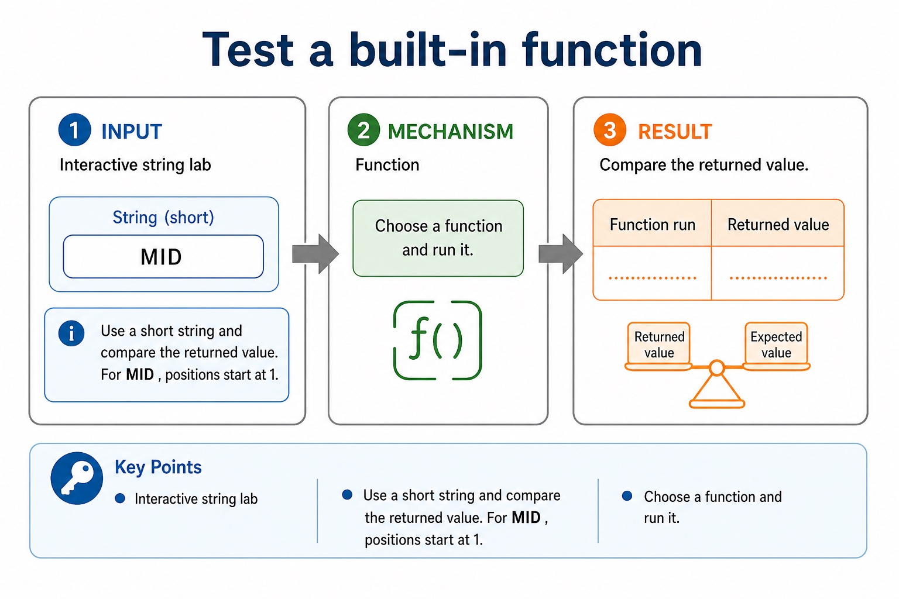
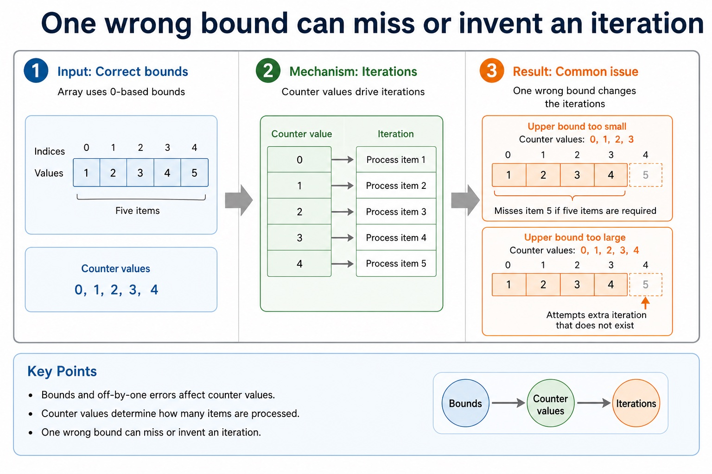
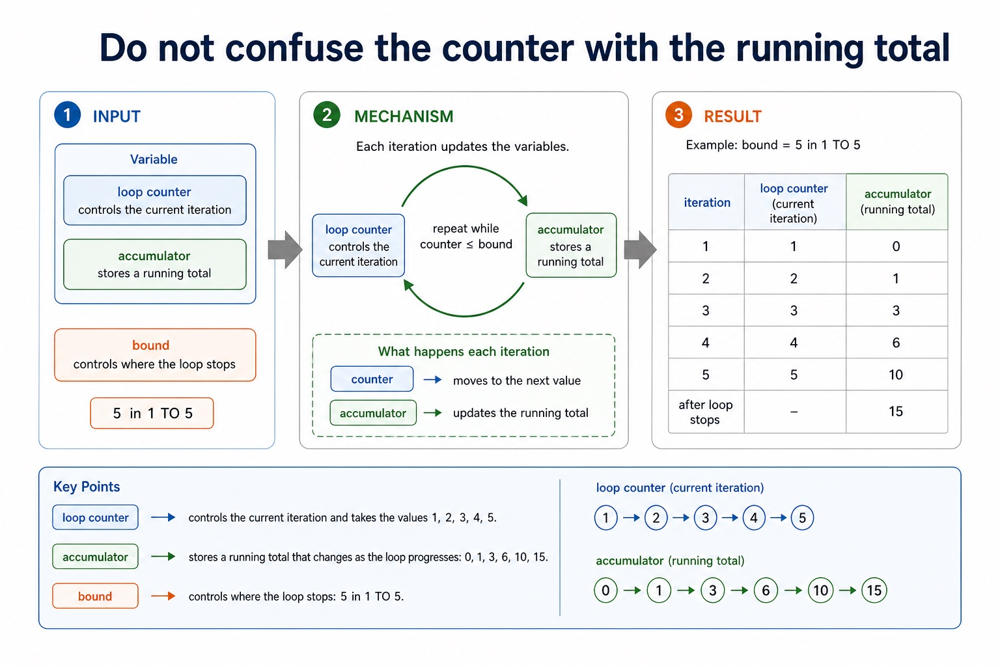

Cambridge AS9618 | Paper 2 | Section 11: Programming
Built-in routines and string functions
Flexible-depth lesson
S11.03 | Learn from the diagrams, test the method, then choose the practice you need.
Choose a Quick, Full or Deep route
Quick route
Use the diagnostic, learning objectives, first worked example and foundation question. Stop once the learner can explain the central distinction accurately.
Full route
Use every knowledge-point material set, the worked method, the terminology check and all questions.
Deep route
Add the prerequisite refresher, ask learners to connect the concept checklist, discuss the labelled extension and complete a transfer question without a model answer.
Part 1 | optional depth
Prerequisite knowledge and quick diagnostic
Recall the main conclusion from Lesson 071: Arithmetic and logical expressions.
Give one accurate definition or method step before continuing. If it is missing, revisit only that prerequisite.
Part 2 | knowledge-point material sets
Learn each point through visuals
Follow the map, the three-part explanation and the concrete cue. Open precise wording only after the idea is clear.
Open the concept checklist and choose what to teach
built-in / library
string
functions
01
S11.03 · concept
Built-in and string functions
Concept map
built-instringfunctions
See how it works
MeaningAny function not given in the pseudocode guide will be provided
Mechanismstring manipulation functions will always be given in the question
ConsequenceUse built-in functions and library routines
S11.03 diagrams
1 / 3
01
Concrete example · 1 of 3
Use the string-function definition supplied in the question
Open text transcript
String manipulation functions are supplied in the question; use the stated name, parameter order and position convention.
Trace the supplied routine exactly, then use its returned string in an assignment, comparison, output or expression.
Do not import Java's zero-based substring convention or memorise an unstated course-specific signature.
02
Comparison · 2 of 3
Test a built-in function

Open text transcript
Interactive string lab
Use a short string and compare the returned value. For MID , positions start at 1.
Function
Choose a function and run it.
03
Diagram · 3 of 3
Use functions for returned values and procedures for actions
Open text transcript
A function returns a value; a procedure performs an action.
IsPass returns a BOOLEAN based on whether Mark is at least 50.
Close the function's IF with ENDIF before ENDFUNCTION.
DisplayResult outputs its parameters and returns no value.
Open precise syllabus wording
Use built-in/library and string functions.
Use built-in functions and library routines. Any function not given in the pseudocode guide will be provided; string manipulation functions will always be given in the question.
Supporting diagram library
1 / 4
01
Diagram · 1 of 4
FOR loops are natural for fixed array bounds
Open text transcript
Array processing
Output all marks
FOR Index <- 1 TO 30
OUTPUT Marks[Index]
NEXT Index
Total all marks
Total <- 0
Total <- Total + Marks[Index]
02
Diagram · 2 of 4
One wrong bound can miss or invent an iteration

Open text transcript
Bounds and off-by-one errors
Counter values
Iterations
Common issue
1, 2, 3, 4, 5
0, 1, 2, 3, 4
only if array uses 0-based bounds
1, 2, 3, 4
03
Diagram · 3 of 4
Do not confuse the counter with the running total

Open text transcript
Counter and accumulator
Variable
loop counter; controls the current iteration
1, 2, 3, 4, 5
accumulator; stores a running total
0, 1, 3, 6, 10, 15
bound; controls where the loop stops
5 in 1 TO 5
04
Diagram · 4 of 4
Java for loops are useful, but not the exam answer format
Open text transcript
Java support only
Cambridge-style pseudocode
FOR Count <- 1 TO 5
OUTPUT Count
NEXT Count
Java support example only
for (int count = 1; count <= 5; count++) {
System.out.println(count);
Apply the idea
Worked method
01Apply a supplied string routine
02A question supplies FUNCTION EXTRACT(Text
03INTEGER) RETURNS STRING and states that positions start at 1.
05Code <- EXTRACT(Name, 1, 3) uses the supplied routine in an assignment without importing Java indexing.
Open precise terminology and exam facts
Use built-in functions and library routines. Any function not given in the pseudocode guide will be provided; string manipulation functions will always be given in the question.
Read the supplied function name, parameter order, position convention and returned type before using it. LENGTH is a familiar built-in example; LEFT, RIGHT, MID or SUBSTRING examples in this course illustrate a mechanism only when their definition and indexing convention are stated.
A function call returns a value, so it can be assigned, compared, output or combined in an expression. Do not import Java's zero-based substring convention unless the question explicitly specifies it.
For built-in routines and string functions, identify the required concept before describing its mechanism or consequence.
Beyond syllabus / 延伸知识（不要求背诵）
consistent style, modularity and automated tests reduce maintenance errors in larger programs.
Part 3 | select by learner need
Practice by question type
applyrecallfoundation2 marks
Question 1. Will an unfamiliar string manipulation function be supplied?
Show answer and marking guidance
Answer: Yes. The syllabus says string manipulation functions will always be given.
Marking guidance: Award one mark for each distinct, technically accurate point or method step.
Common error: For the command word apply, perform that exact action; do not replace it with an unrelated fact.
statecalculateapplication4 marks
Question 2. A question supplies FUNCTION TAKE(Text : STRING, Start : INTEGER, Count : INTEGER) RETURNS STRING and FUNCTION TOUPPER(Text : STRING) RETURNS STRING, with positions starting at 1. State LENGTH("ALGORITHM"), state TAKE("ALGORITHM", 3, 4), and write an assignment that converts the extracted STRING to upper case.
Show answer and marking guidance
Answer: LENGTH result is 9; TAKE result is GORI; uses the supplied Start/Count convention rather than Java indexing; assigns TOUPPER(TAKE("ALGORITHM", 3, 4)) or equivalent to a variable
Marking guidance: Do not use CHAR-only UCASE on a STRING, require memorisation of an unstated substring signature or import Java's zero-based indexes.
Common error: Do not repeat the same point in different words; each mark needs a separate idea or method step.
applyrecalltransfer2 marks
Question 3. May a returned string be assigned to a variable?
Show answer and marking guidance
Answer: Yes; a function return can be used wherever a compatible value is needed.
Marking guidance: Award one mark for each distinct, technically accurate point or method step.
Common error: Do not copy the worked example unchanged; transfer the method and check it against the new context.
Related past-paper indexes
Reference
Marks
Command word
Question type
9618/23/W/25 Q4
6
complete
calculate
9618/21/S/25 Q7(ii)
4
explain
explain
9618/23/W/25 Q1(a)
3
design
recall
9618/23/S/25 Q1(iii)
2
state
recall
Index only: Cambridge question and mark-scheme wording is not reproduced on this public course page.
Part 4 | close when ready
Summary and exam reminders
Summary
Define built-in routines and string functions with the exact technical vocabulary expected by the syllabus.
Use the lesson method on a fresh context and show the intermediate decision, representation or calculation.
Match the shape of the answer to the command word and the available marks.
Check the final answer against the scenario instead of repeating a memorised sentence.
Common error to correct
Students often think working Java automatically means good pseudocode. Correction: Paper 2 rewards clear Cambridge-style algorithm expression.
Exam technique
Follow the command word: state gives a fact; explain links a cause to a consequence; compare covers both sides.
Match the number of independent points or method steps to the available marks.
For built-in routines and string functions, use the exact technical term before applying it to the scenario.